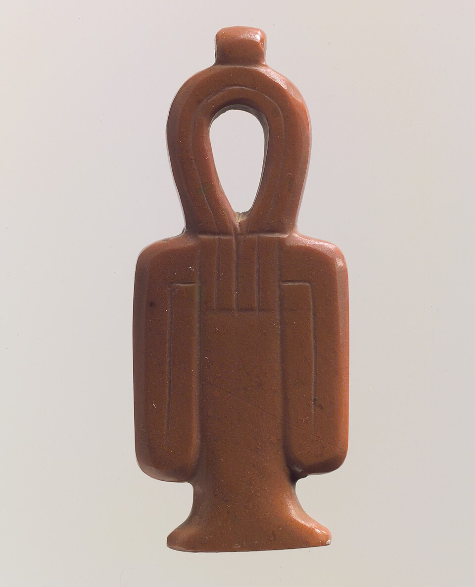

Тьет
«Узел Исиды» · «кровь Исиды» · защита и материнская опёка

Что такое тьет
Тьет (егип. тьет) — узел с петлёй сверху и лентами по бокам: знак, похожий на анх, но с «завязанными концами». Его называют «узлом Исиды» и «кровью Исиды»: символ защиты, материнской силы, воскрешения, связанный с богиней Исидой.
Кровь богини
Тьет читали как «кровь Исиды» — её силу и её опеку над умершими. Амулет делали из красного камня — красной яшмы, сердолика — и клали на шею мумии: знак материнской защиты над «ребёнком». Каждый знак требовал своего материала: у тьэта — красный камень, «кровь» богини.
Заклинание 156 Книги мёртвых
Амулету тьэта принадлежит заклинание 156 из Книги мёртвых — «заговор тьэта», которое читали над амулетом из красной яшмы, сделанным для Исиды. Формула заговора: «О кровь Исиды, о магия Исиды, о слова силы Исиды, защитите этого человека, как вы защитили Гора». Так амулету давали задачу: беречь умершего так, как богиня берегла Гора, — всей её кровью и магией.
Амулеты и сцены
В погребальных сценах тьет часто встречается парой в руках богинь, охраняющих мумию, — Исиды и Нефтиды: пара знаков — пара защитниц. Тьет носили и при жизни: беременная женщина повязывала амулет ради безопасных родов и защиты ребёнка — родовая магия богини.